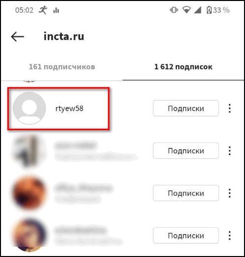
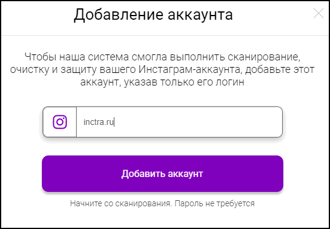
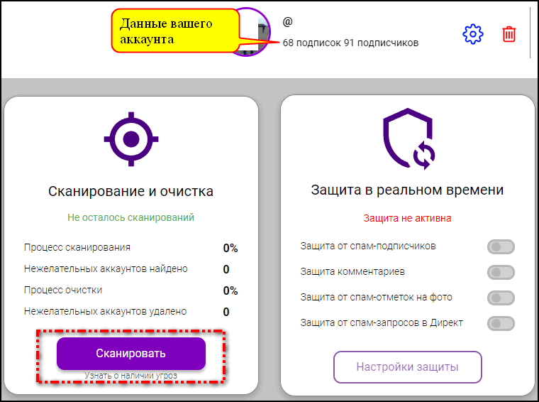
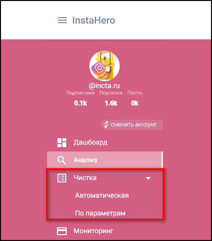
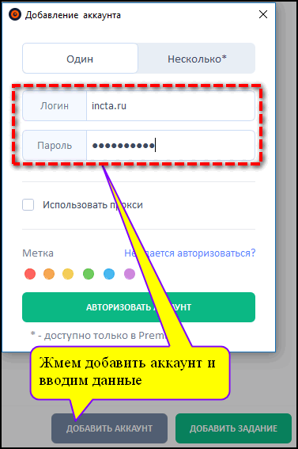
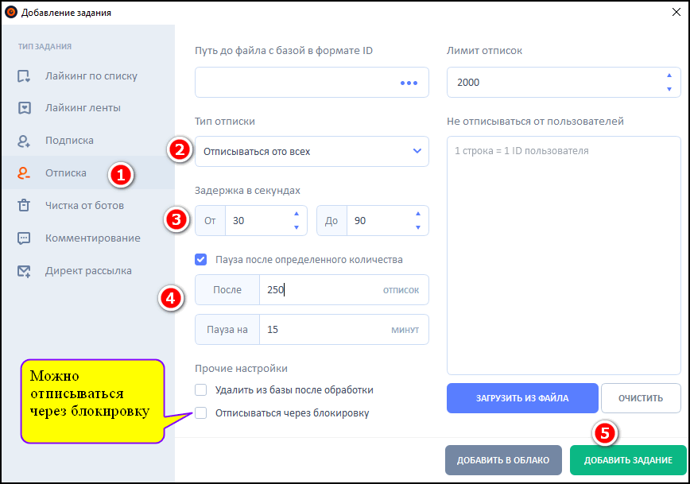
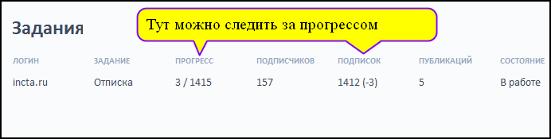
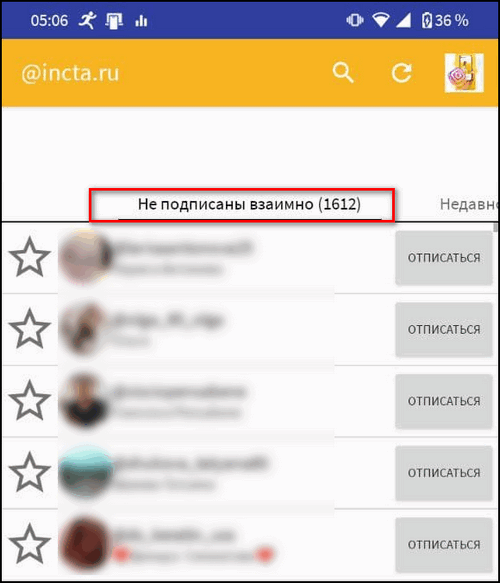
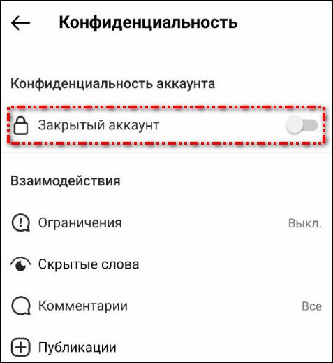

Как быстро и безопасно удалить ненужные подписки в Инстаграм

- Определение и ручное удаление подписок в Инстаграм*
- №1 SpamGuard: лучшая защита для профиля
- №2 InstaHero: чистим ненужные подписки
- №3 Автоматическое удаление подписок через компьютер - уже не рабочий способ
- №4 Удалить подписки в Инстаграме* через приложение на телефоне
- Почему Инстаграм* не дает удалить подписки
- Откуда появляются боты в Инстаграме*
- Почему важно удалять подписки из аккаунта
Удалить ненужные подписки в Инстаграме* владелец может после детального анализа своего профиля. Это могут быть страницы шоурумов, информационные блоги или заброшенные аккаунты.
Определение и ручное удаление подписок в Инстаграм*
Подписки в социальной сети расположены в верхней группе, рядом с аватаркой и подписчиками. Это те аккаунты, на которые владелец профиля оформил подписку. Они появляются в Ленте, в списке недавно опубликованных Историй. В Инстаграме* можно разделить подписки на:
- важные. Страницы друзей/знакомых, конкуренты или дружественные аккаунты;
- неважные. Информационные блоги, заброшенные профили, магазины;
- опасные. Боты и фейки, страницы с рекламой, они подлежат обязательной чистки и удалению.
Владелец блога может удалить либо всех за один клик, либо постепенно очищать перечень. Для этого предусмотрено удаление в ручном режиме (перейти к подпискам и самостоятельно их убирать), онлайн-сервисы (удаляют по параметрам).
Чтобы определить опасные аккаунты в подписках:
- Зайти в Инстаграм* – раздел: «Подписки».
- Пролистать страницы и выделить те, где нет аватарок.
- Определить профили магазинов.

- Постепенно удалять после проверки.
К примеру, если у владельца аккаунта без аватарки отсутствуют какие-либо публикации – это может быть фейк. Причины добавления могут быть разными: от наблюдения со стороны конкурентов до накрутки. Поэтому при анализе и аудите страницы, чистить свой профиль, чтобы улучшить показатели вовлеченности пользователей.
№1 SpamGuard: лучшая защита для профиля
Сервис SpamGuard предлагает защиту аккаунта и первый анализ. Для этого необязательно регистрироваться – войти в сервис и ввести свой никнейм, чтобы посмотреть данные. Но чтобы воспользоваться, должна быть открыта страница, то есть общедоступная. Как использовать:
- Зайти в SpamGuard – нажать: «Начать анализ».
- Ввести ник страницы – подождать, пока добавится аккаунт.

- Нажать кнопку «Сканировать».

- Завершающие настройки.
- Посмотреть, какие данные показала система.
Помимо того, что пользователю будут показаны «Нежелательные аккаунты» - снизу расположена кнопка, с помощью которой можно избавиться от этих подписчиков.
Но это уже платная услуга, которую можно подключить единично или в качестве пакета услуг. При полной защите странице сервис регулярно проверяет всех подписчиков и подписки, постепенно удаляет опасных и ненужных.
№2 InstaHero: чистим ненужные подписки
С помощью сервиса InstaHero можно удалить все подписки сразу. Или же использовать раздел: «Чистка» - По параметрам. Эта категория помогает выделить друзей и важные страницы, а от остальных избавиться. Причем, основной упор идет именно на удаление подписчиков. Но есть вариант, как убрать ненужные подписки. Как очистить профиль:
- Войти в профиль и подключить учетную запись из Инстаграма*.
- Перейти в раздел: «Чистка» - По параметрам.

- Указать «Подписан взаимно» - запустить очистку.
Сервис поддерживает удаление по промежуткам. Это значит, что после отписки 10 подписок, будет время для «отдыха». Это сделано по той причине, что аккаунт могут заблокировать при массовой отписке.
№3 Автоматическое удаление подписок через компьютер - уже не рабочий способ
Единственный рабочий способ(уже не работает) как удалить подписки из Инстаграма* в автоматическом режиме - использовать программу на компьютере Leongram. Я покажу все по шагам: где скачать и как настроить отписку от лишних людей.
Установка и настройка программы Leongram на компьютере:
- Переходим на сайт leongram.com/software.
- Жмем кнопку скачать бесплатно и загружаем на компьютер, устанавливаем.
- Регистрируем профиль на сайте Leongram.ru.
- Запускаем программу и вводим данные от Леонграма (ВНИМАНИЕ: логин и пароль от кабинета ЛЕОНГРАМ).
- Далее жмем -> Добавить аккаунт -> вписываем данные от своей странички в Инстаграм*.

- Далее внизу -> Добавить задание -> Отписка, настраиваем отписку.

- Во втором пункте на скрине выше, можно выбрать: удалить не взаимные подписки в Инстаграме*, тогда программа будет удалять только тех, кто не подписан в ответ на вас. С помощью данной функции можно периодически проверять свой аккаунт и находить тех, кто больше не захотел быть на вашей страничке и соедить за обновлениями.
- Обратите внимание на задержки и паузы, они выставляются, чтобы не было превышения по лимитам.
- Далее просто наблюдайте за прогрессом работы программы.

На данный момент это единственный и причем бесплатный способ удаления подписок из своего профиля в Instagram*. Надеюсь он поможет с решением вашей задачи. Буду рад, если сохраните адрес нашего сайта incta.ru, будем постить еще больше полезного материала, поэтому заходите периодически или подписывайтесь на наш аккаунт в социальной сети.
№4 Удалить подписки в Инстаграме* через приложение на телефоне
С помощью смартфона можно удалить подписчиков, которые не оформили взаимной подписки. Это возможно через мобильное приложение или самостоятельно, пройдясь по списку фанатов. Как удалить с помощью приложения:
- Зайти в Play Market – скачать : «Followers-Unfollowers».

- Подключить свой профиль Инстаграма* – выбрать раздел: «Не подписаны в ответ».
- Нажать: «Удалить».
Приложение постепенно удалит тех, кто не оформил подписку в ответ. Чтобы проверить самостоятельно, нужно перейти в разделы: «Подписчики» и «Подписки», сравнить какое количество пользователей невзаимные.
Почему Инстаграм* не дает удалить подписки
Если Инстаграм* не дает удалить подписки, то есть всего один вариант – сработали лимиты. Это ограничения по количеству действий в сутки. Например, если владелец страницы в течение одного дня удалил до 100 дружественных аккаунтов – появится уведомление, что действие заблокировано. В следующий раз можно удалить только спустя 24 часа.
Другие причины, почему могут не удаляться:
- нет подключения к сети. Когда владелец учетной записи впервые удалял, его подключение к Интернету было нестабильным или вовсе отсутсвовало;
- нужно обновить приложение. Перейти к магазину контента и попробовать переустановить.
Но причина с блокировкой действий наиболее распространенная. На экране появится сообщение, которое предупреждает о заблокированных действиях. И если пользователь продолжает чистить список подписок, то его аккаунт могут вовсе заблокировать на короткий срок. Превышение лимита рассматривается, как автоматическое действие. Инстаграм* блокирует любые похожие взаимодействия, ссылаясь на безопасность пользователей и снижение нагрузки на сервера.
Откуда появляются боты в Инстаграме*
Боты или фейки – это зачастую невзаимные подписки, если только речь не идет о массовом фолловинге. Владелец учетной записи сможет заметить таких подписчиков, если просмотрит весь список.
- отсутствие аватарки или стандартная картинка;
- нет описания, даже краткой информации о себе;
- открытый профиль, где нет фотографий и не публикуются Истории;
- можно встретить в комментариях под публикациями, с одинаковым текстом.
- генерация подписок на страницу с целью дальнейшей продажи;
- при накрутке. Аккаунт создан реальным человеком, но используется только для получения выгоды;
- распространение спама, рекламы.
Большое количество ботов в подписках и подписчиках могут стать причиной теневой блокировки. Инстаграм* расценит, что этот профиль часто взаимодействует с фейками, ограничит возможность выводить записи в ТОП.
Почему важно удалять подписки из аккаунта
Если в профиле много подписок, то это влияет на уровень доверия у аудитории, а также дальнейшее продвижение страницы. Чтобы постоянно отслеживать уровень подписчиков и подписок, нужно использовать либо мобильное приложение, либо самостоятельно отслеживать. Как отслеживать самостоятельно:
- ежедневно проверять список подписок;
- установить статус: «Закрытый аккаунт» (нельзя закрывать бизнес аккаунты), чтобы самостоятельно фильтровать подписчиков.

Удалять подписки необходимо по таким причинам:
- влияние на продвижение. Такие аккаунты составляют целевую аудиторию, а она может не соответствовать реальным данным;
- подписки видны всем подписчикам. Это значит, что владелец профиля не сможет их скрыть, если у него есть товарищи/знакомые;
- если владелец крупного блога подписан на многие страницы, это повлияет на уровень доверия аудитории.
Поэтому, чтобы подписчики не смогли перейти к списку друзей или посмотреть, на какие магазины подписан владелец блога – нужно удалять из перечня некоторые страницы. Ненужные подписки – это еще и те, которые заполняют Ленту и найти среди новых постов интересные, становится трудно. Регулярная чистка своего информационного поля помогает выделить именно важные сообщения от друзей/знакомых. Среди ненужных могут находиться и давно заброшенные аккаунты, которые могут повлиять на блокировку.